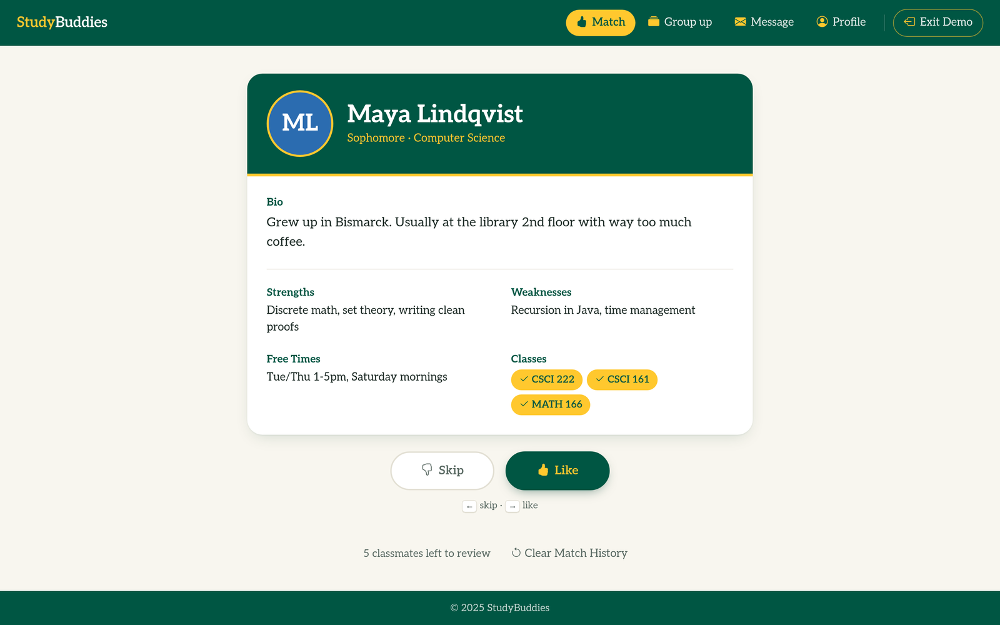

StudyBuddies
A full-stack web app that pairs students as study partners based on the classes they share. I led a team of three that built it for CSCI 313 in spring 2025.

- Team
- 3
- I was team leader
- Course
- CSCI 313
- Spring 2025
- Hosted on
- Render
- Django API. Angular is on GitHub Pages.
How it's built
The frontend is an Angular app hosted on GitHub Pages. The backend is a set of Django REST services deployed on Render, with Firebase storing accounts and profile data and Stream providing messaging. Students sign in through NDSU's Bison Login, so identity is verified with Duo Push instead of a confirmation email.
On the match page a student sees one classmate at a time, with their bio, strengths, weaknesses, free times and the classes they share, and chooses Like or Skip.
What changed
The original design matched students on strengths, weaknesses and availability as well as classes. We ran short on time, so matching uses shared classes only, and we dropped notifications for the same reason. Profiles still collect strengths, weaknesses and free times, and they appear on each match card.
We also reworked study groups. Students create a group from a modal, join or leave other groups from the main page, and manage the groups they created on a separate page.
What was hard
Getting data out of the database in the shape the frontend needed took the most time. None of us had much experience with Django, so we learned it during the project and wrote the data-access methods together.